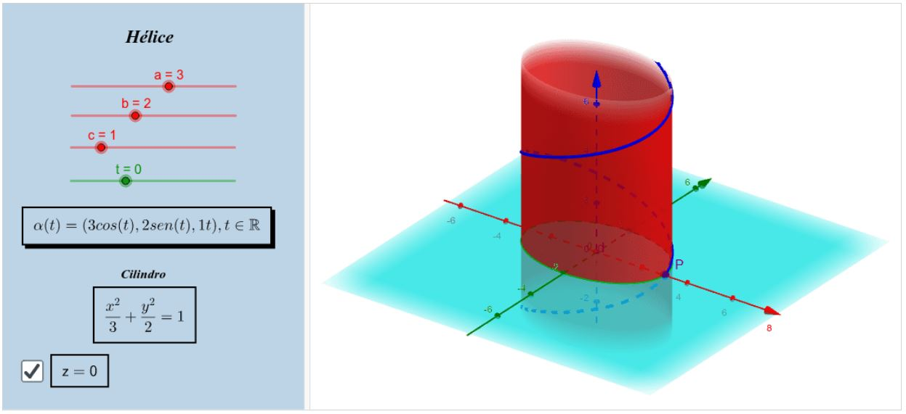
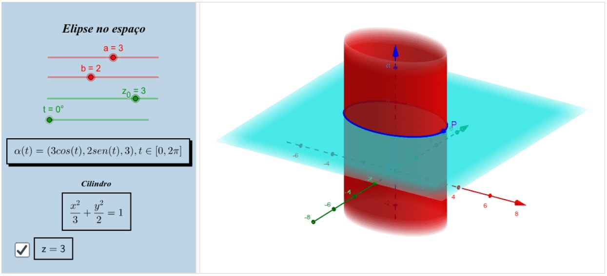

Revisão de Geometria Analítica
Curvas paramétricas no espaço
Hélice
A curva diferenciável parametrizada dada por:
$$
\alpha(t)=(a \cos (t), b \operatorname{sen}(t), c t), t \in \mathbb{R}
$$
tem por traço uma hélice. Observe que se $a=b$, teremos uma hélice circular.
No recurso computacional, você encontrará uma hélice, sinalizada em azul escuro.
Haverá uma caixa para selecionar a altura do plano $z=t$. Simultaneamente, o parâmetro $t$ está ligado à trajetória do ponto $P$ sobre a hélice,
deslize para conferir. Perceba que temos apenas o cilindro em $X Y$, mas assim como existem outros cilindros, também há outras hélices neles.
Elipse no espaço
A curva diferenciável parametrizada dada por:
$$
\beta(t)=(a \cos (t), b \operatorname{sen}(t), c), t \in[0,2 \pi]
$$
tem por traço uma elipse no espaço. Observe que se $a=b$, teremos uma circunferência no espaço.
No recurso computacional, você encontrará uma elipse, sinalizada em azul escuro.
Haverá uma caixa para selecionar a altura do plano $z=c$ e, consequentemente, a altura na qual a elipse se encontrará. O parâmetro $t$ está ligado
à trajetória do ponto $P$ sobre a elipse, deslize para conferir. Este varia no intervalo $[0,2 \pi]$ pois, como já vimos em parametrização de curva
no plano, é o intervalo de $t$.
Perceba que temos apenas o cilindro em $X Y$, mas assim como existem outros cilindros, também há outras elipses/circunferências neles.
Recursos computacionais
Helice
Livro Geogebra

Elipse no espaço
Livro Geogebra
